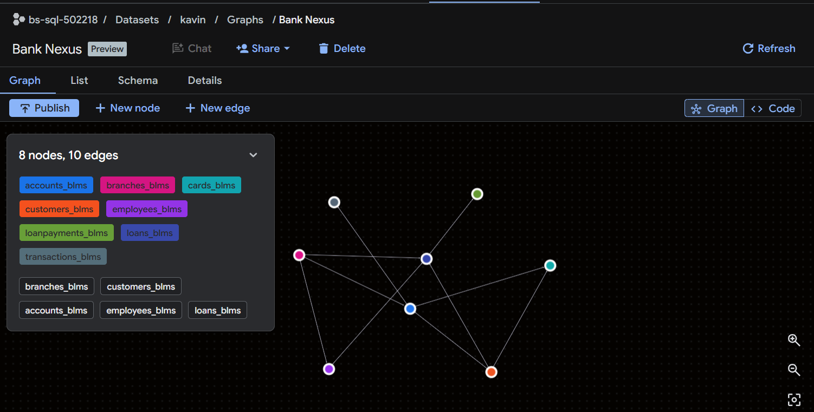
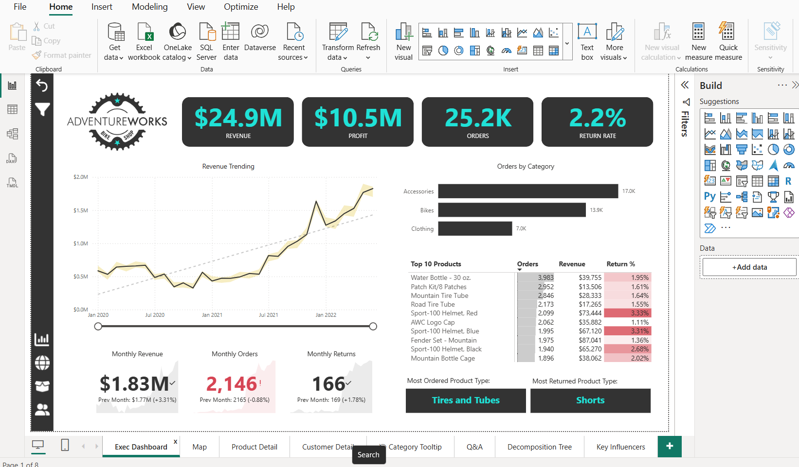

Projects
Three problems, from data to decisions.
End-to-end analytics projects covering Advanced SQL querying, Python analysis and Power BI dashboards — turning raw data into meaningful business insights.
Bank Loan Management System
July 2026 · SQL · GCP Big Query
Designed scalable database architecture in Google BigQuery with normalized relational schema and referential integrity. Built comprehensive data models connecting loans, customers, accounts, and transactions. Conducted advanced SQL analysis using CTEs, window functions, and aggregate functions to identify loan defaults, dormant accounts, over-leveraged customers, and support risk management.

Drag to rotate305K+Transactions & Payments
8Tables Designed
Adventure Works
August 2026 · Power BI · Power Query · Data Modeling
Built Power BI dashboards analyzing $24.9M revenue across 3 years (2020-2022). Created Executive Dashboard tracking KPIs, Product Dashboard with drill-downs and price adjustments, Customer Dashboard profiling by income/occupation, and Geographic Map Dashboard for regional analysis. Implemented advanced DAX measures and Power Query transformations to enable trend analysis and forecast overlays.

Drag to rotate$24.9M Revenue Analyzed
76K+Records Processed
4Dashboards Delivered
Library Analytics Engine
July 2026 · SQL · MySQL
Analyzed library operations data using advanced SQL techniques to drive member engagement and collection optimization. Implemented window functions, CTEs, and complex aggregations to identify circulation patterns, segment members by behavior, optimize inventory allocation, and surface actionable insights for library performance improvement.
 Drag to rotate
Drag to rotate
37K+Policies
DAXMeasures